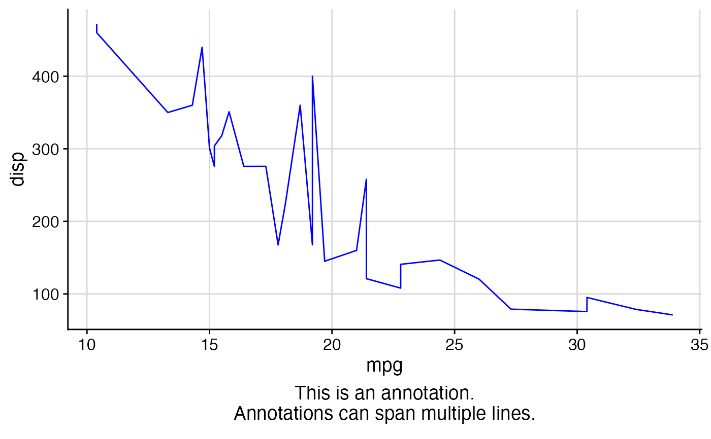
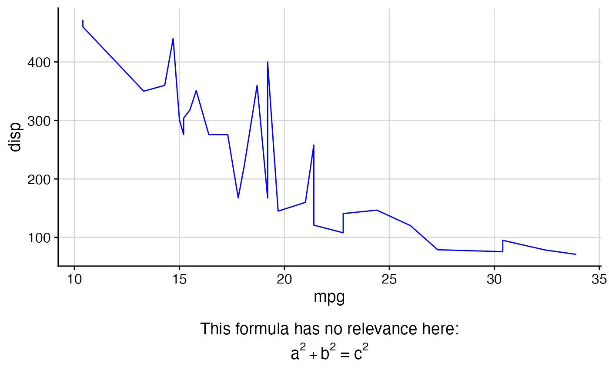
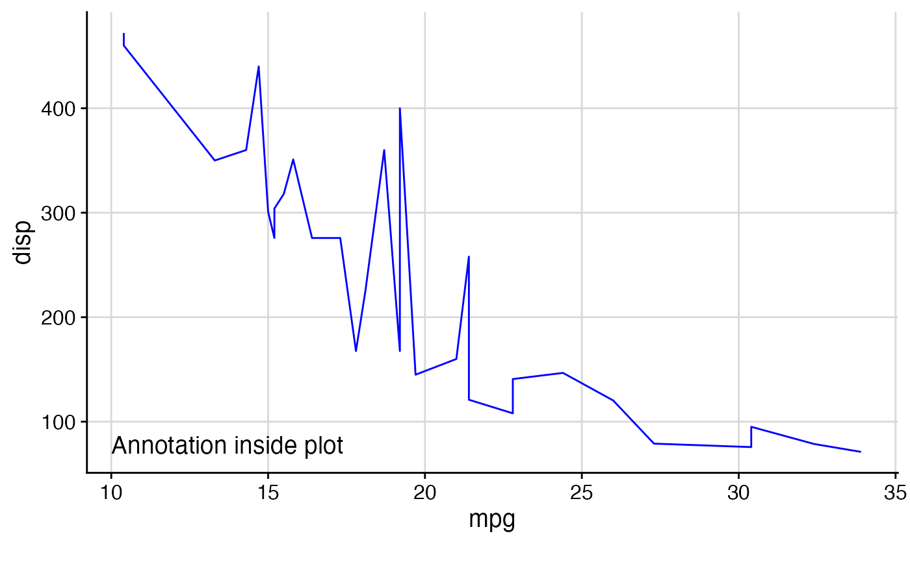

This function can add an arbitrary label or mathematical expression underneath
the plot, similar to the sub parameter in base R. It is mostly superseded now by the
caption argument to ggplot2::labs(), and it is recommended to use caption instead of
add_sub() whenever possible.
add_sub( plot, label, x = 0.5, y = 0.5, hjust = 0.5, vjust = 0.5, vpadding = grid::unit(1, "lines"), fontfamily = "", fontface = "plain", color = "black", size = 14, angle = 0, lineheight = 0.9, colour )
Arguments
| plot | A ggplot object or gtable object derived from a ggplot object. |
|---|---|
| label | The label with which the plot should be annotated. Can be a plotmath expression. |
| x | The x position of the label |
| y | The y position of the label |
| hjust | Horizontal justification |
| vjust | Vertical justification |
| vpadding | Vertical padding. The total vertical space added to the label, given in grid units. By default, this is added equally above and below the label. However, by changing the y and vjust parameters, this can be changed. |
| fontfamily | The font family |
| fontface | The font face ("plain", "bold", etc.) |
| color, colour | Text color |
| size | Point size of text |
| angle | Angle at which text is drawn |
| lineheight | Line height of text |
Value
A gtable object holding the modified plot.
Details
The exact location where the
label is placed is controlled by the parameters x, y, hjust, and
vjust. By default, all these parameters are set to 0.5, which places the label
centered underneath the plot panel. A value of x = 0 indicates the left boundary
of the plot panel and a value of x = 1 indicates the right boundary. The parameter
hjust works just as elsewhere in ggplot2. Thus, x = 0, hjust = 0 places
the label left-justified at the left boundary of the plot panel, x = 0.5, hjust = 0.5
places the label centered underneath the plot panel, and x = 1, hjust = 1 places
it right-justified at the right boundary of the plot panel. x-values below 0 or
above 1 are allowed, and they move the label beyond the limits of the plot panel.
The y coordinates are relative to the added vertical space that is introduced
underneath the x-axis label to place the annotation. A value of y=0 indicates
the bottom-most edge of that space and a value of y=1 indicates the top-most
edge of that space. The total height of the added space is given by the height needed
to draw the label plus the value of vpadding. Thus, if y=0, vjust=0 then
the extra padding is added entirely above the label, if y=1, vjust=1 then the
extra padding is added entirely below the label, and if y=0.5, vjust=0.5 (the
default) then the extra padding is added equally above and below the label. As is the
case with x, y-values outside the range 0-1 are allowed. In particular,
for sufficiently large values of y, the label will eventually be located inside
the plot panel.
Examples
library(ggplot2) theme_set(theme_half_open()) p1 <- ggplot(mtcars, aes(mpg, disp)) + geom_line(colour = "blue") + background_grid(minor='none') ggdraw(add_sub(p1, "This is an annotation.\nAnnotations can span multiple lines."))# You can also do this repeatedly. p2 <- add_sub(p1, "This formula has no relevance here:", y = 0, vjust = 0) p3 <- add_sub(p2, expression(paste(a^2+b^2, " = ", c^2))) ggdraw(p3)#This code also works with faceted plots: plot.iris <- ggplot(iris, aes(Sepal.Length, Sepal.Width)) + geom_point() + facet_grid(. ~ Species) + stat_smooth(method = "lm") + background_grid(major = 'y', minor = "none") + # add thin horizontal lines panel_border() # and a border around each panel p2 <- add_sub(plot.iris, "Annotation underneath a faceted plot, left justified.", x = 0, hjust = 0)#>ggdraw(p2)# Finally, it is possible to move the annotation inside of the plot if desired. ggdraw(add_sub(p1, "Annotation inside plot", vpadding=grid::unit(0, "lines"), y = 6, x = 0.03, hjust = 0))